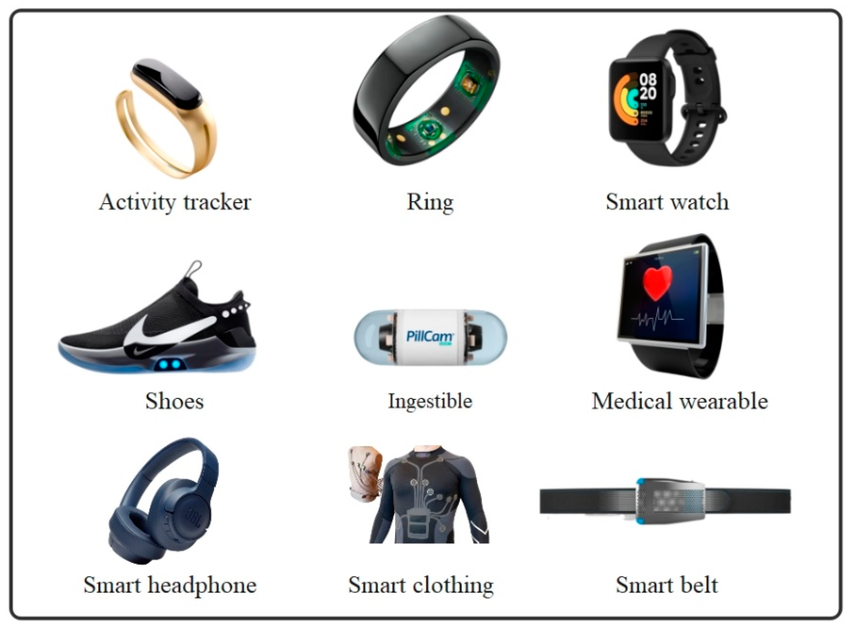

Explore Eloheh's Innovative Health Products

At Eloheh Health, we are proud to offer products that bring healthcare closer to home and empower patients through smart, accessible technology.
Our Featured Products
- VitalTrack Wearable: A sleek device that monitors heart rate, blood pressure, and oxygen levels in real time.
- Eloheh Health App: Connect with doctors, view health stats, and get personalized wellness tips on your phone.
- Telehealth Kiosk: A portable unit for remote consultations in rural or underserved communities.
Why Our Products Stand Out
- Built with input from licensed physicians and technology experts.
- Support for multi-language interfaces to ensure inclusivity.
- Designed for easy integration with existing health records and platforms.
Learn more about trends in health tech at MobiHealthNews.
Download our product brochure here: Eloheh Product PDF
Contact Me — Products Page by Nayan